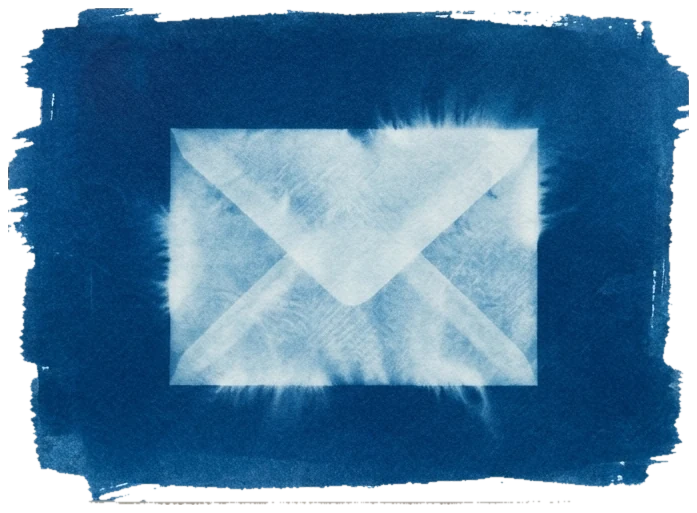
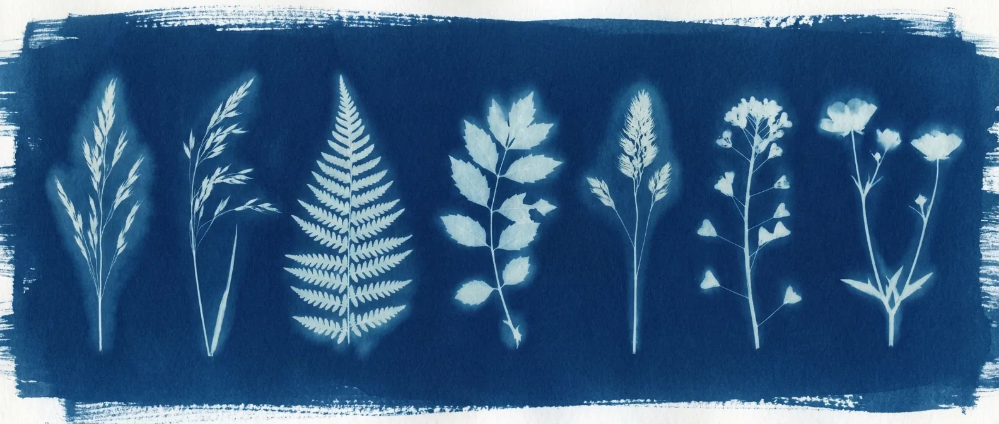
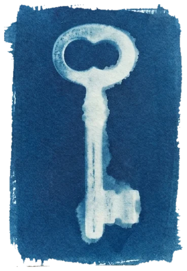

Northmark Advisory
Proposal · 2026
A blueprint for
One operating picture, a plan the team can execute, and a partner who stays until it works.
One operating picture, a plan the team can execute, and a partner who stays until it works.

01 · what we heard
And underneath it, what we usually find
02 · how we work
01
Interviews, data pull, a walk through the real process — not the org chart. Output: the operating picture on one page.
02
The target model: who decides what, which numbers matter, how work moves between teams. Output: the plan with owners and dates.
03
We run the first cycle with your team, then hand it over with the rituals that keep it alive. Output: a cadence that works without us.
03 · who
Engagement lead · 14 years in operations
Ran the operating model rebuild at two mid-market manufacturers before founding Northmark.
Analyst · data and process
Builds the operating picture: the numbers, the maps, the dashboards your team keeps after we leave.

04 · what changes in 90 days
1
operating picture — one page every leader reads on Monday
−30%
decision cycle — from question to owner in days, not weeks
12
weekly cycles — the cadence your team runs after we leave
05 · twelve weeks
Interviews, data pull, process walk; the operating picture, v1.
Target model, owners and numbers; two review rounds with leadership.
First cycles run together; hand-over with the rituals and the dashboard.
06 · investment
Stages and prices appear here from the stages editor when the presentation is created.
After the project — pick how we stay
Selected: Embedded — $6,000 a month

07 · next steps
One click below — we send the agreement the same day.
One executive who owns the outcome and the calendar.
Half a day with the leadership team; discovery starts the same week.
Northmark Advisory
The print is yours to keep — the questions are ours to answer, any day this week.